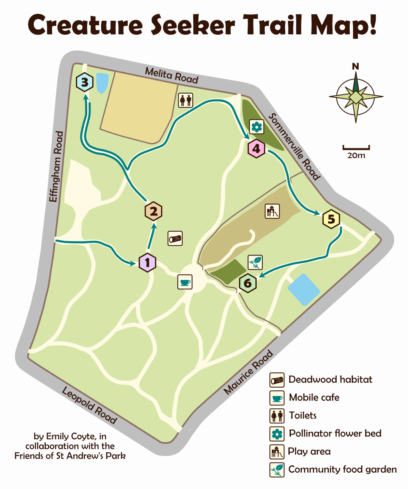

Show/hide trail route details
Step 1
Enter the park from the main entrance on Effingham Road, between two large trees. Head straight ahead towards the centre of the park.
Look for: a tree with lots of ivy on it!
Step 2
Turn left and follow the trail, just a short way.
Look for: a very large log from a fallen tree!
Step 3
Continue on the path, and when you come to a crossroads in the path, continue on straight. Follow on, then bear round to the right.
Look for: a wildlife pond - recently renovated!
Step 4
Head back the way you came, then when you get to the same crossroads in the path, take the left turn. If you pass by some toilets, you’re on the right track!
Look for: a pollinator-friendly flower patch!
Step 5
Continue along this path, you will pass the Wellington memorial. Go through the gate into the dog-free area.
Look for: trees along the path!
Step 6
When you reach the corner of the park, turn right and then right again. At the fork, take the right path and continue along.
Look for: a community growing garden! (e.g. raised beds and compost bins)
Done!
Well done, you have completed the trail! Go through the gate near the final sign and you will end up in the central area. Feel free to explore the rest of the park from there.
Look for: a mobile cafe, open 8am-4pm Mon-Fri, 9am-4pm Sat-Sun, if you fancy some refreshments!